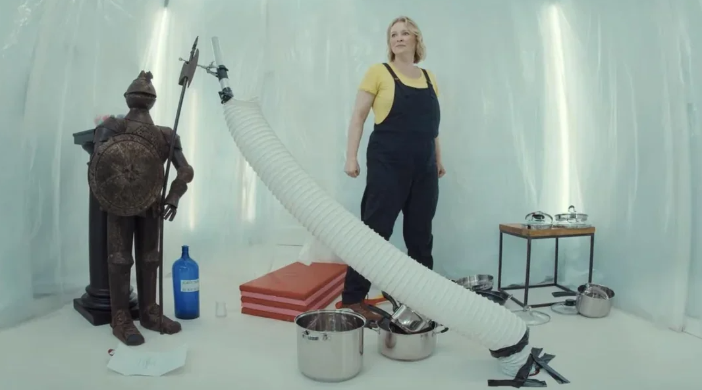

Series 21, Episode 5: Backwards in Time
Your Task
It’s the mid point of Series 21 of UK Taskmaster, or as some might say, the median point of the series! What interesting task shall I set for myself this week?
Will I manage to get this post published before the broadcast of Episode 6?
What aspects of my commentary will have to suffer in order to achieve this internal deadline and pressure that I put on myself.
How will I balance the metaphorical points handed out by The Flock, and my own quality control?
Who knows, but for those who want to perform analysis themselves, the raw data (each contestants task attempt) for Series 21 can be found in the following Google Sheets File.
Figure 1: I have arrived, and here to conquer my own personal tasks and deadlines.

Episode Recap
Episode 5 Performance Report Card
Episode 5 Performance Grade is based on comparing the current episode performance, to the prior 4 episode(s) performance and where it lies in the distribution.
Figure 2: Episode 5 Performance Report Cards
From the Episode 4 Performance Report Card (Figure 2):
- Armando becomes the second male contestant of the series to win an episode! Who would have thought that Kumail would be the last to win an episode.
- Armando has also rightfully earned the title of achieving the most points per episode in the series so far. He accumulated 24 points in Episode 4, which out of a potential 25 points, is a very impressive hit rate of 96%.
- The rare occurrence of a three way tie occurred in 2nd place between Joanna, Joel and Kumail. They were awarded 16 points each by the Taskmaster.
- This was considered a bad episode for Joanna (lower half of episode points distribution), a very good episode for Joel (top quartile), and a good episode for Kumail (top half of distribution).
- Amy had her worst episode to date, only accumulating 11 points and finishing 5th in the episode.
- Amy’s performance in the last two episode has been less than stellar which, as a Gledhill stan, is disappointing to see. I hope she can turn it round, much like Maisie Adam’s escape from the Series 20 Dip. It will be the
Gledhill that I will die on.
- Amy’s performance in the last two episode has been less than stellar which, as a Gledhill stan, is disappointing to see. I hope she can turn it round, much like Maisie Adam’s escape from the Series 20 Dip. It will be the
Series 21 Task Points Distribution.
Past covers tasks up to Episode 4, Current Ep covers tasks in Episode 5.
Figure 3: Episode 5 Task Distributions
From the Points Distributions table (Figure 3):
- Greg has not handed out any negative points in this series.
- Amy did not score anything higher than 3 points in this episode, which likely contributed to worst episode to date.
- Amy’s last two prize tasks have been disappointing in my opinion. She has definitely shown a lot more potential and creativity in the past.
- Her points distribution for this episode is quite the departure from her typical high points skewing distribution.
- Armando scored the full 5 points in 4 out of the 5 broadcasted tasks (80%), and 4 points for the remaining task. It is thus no surprise that Armando won the episode.
- We can clearly see that the point distribution in this episode, is substantially different to historic point distributions which is peaked and centered in the lower points range.
Figure 4: A three-way episode tie??? What are we, Series 20 or something? Get out of here.

Series Scoreboard Tracker
Figure 5: Series Scoreboard Tracker
And following the outcome of Episode 5, the series scoreboard (Figure 5) has changed yet again:
- Joanna sneaks back into 1st place for the series, accumulating a total of 86 points to date.
- Amy’s disastrous Episode 5 meant that she has slipped back into 2nd position for the series with 85 points.
- However, the 1 point lead that Joanna has could easily be lost in the next episode if Amy regains her focus and starts performing well again. You can do it Amy!
- Kumail maintains his 3rd place series position with 75 points. Hollywood stability and unionisation!
- Armando jumps into 4th place for the series after his stellar performance in Episode 5.
- Joel falls back into the familiar position of 5th place for the series.
- However, there is only 3 separating the men, and thus we can fully expect these series positions to change by the next episode.
- There is a 10 point gap between the women and men of this series at the moment, a potential indication of who is the stronger sex in the world. Girl power etc.
- The men will have to have at least 2 good episodes (and the women would have to have 2 bad episodes), in order to have a chance of being contenders for series champions.
Figure 6: Greg has perked up that this series is getting more excited!

Neighbourhood Watch
Figure 7: Scatter! A graphical visualisation of Contestants Episode Performance and their Volatility.

The cast of Series 21 still conform to the general cloud mass of prior Taskmaster contestants, as seen in Figure 7.
- Following Episode 5, we now see that Armando is considered the most volatile contestant of the cast in terms of episode scores. It is amazing what a single stellar episode performance can do to your scores.
- Amy is the second most volatile, but it is worth noting that the episode score standard deviation (volatility), is similar for Amy, Joanna, Kumail and Joanna.
- It’s also worth remarking how close Amy and Joanna are in terms of both average episode score and standard deviation at this point. This is not a complete surprise (at least from an average episode score perspective), since there is only 1 point separating them in the series at the moment.
- In terms of potential rebels from Taskmaster contestants of yore, we see rebels from Series 2 (Richard Osman, Katherine Ryan, Jon Richardson) on the far right1.
- The Series 2 appearances can be attributed to the controversial live task “Throw rabbits into a hat” in which the actual physical number of rabbits in hat directly translated into episode and series points. This consequently inflated the episode scores for most of these contestants.
- We also see Series 6’s Liza Tarbuck as a potential rebel. This can be attributed to Episode 5 of Series 6 presenting 6 tasks in total, rather than the typical 5, and thus more points be available.
- Many of the other rebels also come from the earlier, and shorter series of Taskmaster (Series 1 to 5).
- There deviousness is likely due to the shorter series making them more susceptible to extreme values, particularly when we are dealing with non-robust statistics such as the average and standard deviation (that is they are highly influenced by outliers and extreme values).
Figure 8: Won’t you be my Neighbour? Who are the neighbours of the cast of Series 21? Neighbours are based on a similarity measure based on average episode score and volatility.

From Figure 8, the neighbourhoods surrounding each contestant of Series 21 is generally in line with their current series standings.
- The majority of Amy’s neighbours eventually placed either 1st or 2nd in the series.
- Surprisingly for Armando, the majority of his neighbours have placed 2nd in the series.
- Series 20’s Maisie Adam is also considered a neighbour of Armando which may provide Armando some hope he can escape the Dip.
- Joanna’s neighbourhood consists on 2nd placers in the majority.
- Joel’s neighbourhood consists of 5th placers in the majority.
- Kumail’s has 4th placers as the majority in his neighbourhood.
Figure 9: The welcome Kumail gets from each week’s new neighbours.

Gamble’s Gamble
Within-Episode Ranking Distributions
Figure 10: Within Episode Ranking Distribution: Using Data up to Episode 4 (left) and up to Episode 5 (right).


My those are some flat, uniform looking episode-ranking distributions in Figure 10!
- The most probable outcome with regards to within episode placement:
- Amy: 1st with 33.83% chance (previously 1st with 47.40%).
- Armando: 5th with 28.40% probability (previously 5th with 45.17%).
- Joel: 5th with 25.11% chance (previously 4th with 25.08%).
- Joanna: 1st with 39.12% probability (previously 1st with 40.42%).
- Kumail: 3rd with 23.10% chance (previously 3rd with 28.36%).
- Amy’s and Joanna’s distributions are slightly more skewed towards the higher rankings which makes intuitive sense since they are the high performing contestants who are most likely to win an episode based on historic performance.
- Amy’s distribution has become flatter however, a natural consequence of her disastrous Episode 5 performance.
- Armando’s distribution is slightly more skewed towards the lower rankings, but less so than previous weeks. This is an obvious response to his stellar performance in Episode 5.
End-of-Series Ranking Distributions
Figure 11: Series Ranking Distribution: Using Data up to Episode 4 (left), and up to Episode 5 (right).


And with a change in the series standings, comes a major change in the series ranking distribution for each contestant (Figure 11):
- The most probable series outcomes are:
- Amy: 2nd with 56.64%; previously 1st with 70.65%.
- Armando: 5th with 39.40%; previously 5th with 91.30%.
- Joel: 5th with 39.98%; previously 4th with 59.38%.
- Joanna: 1st with 64.83%; previously 2nd with 67.06%.
- Kumail: 3rd with 48.76%; previously 3rd with 67.05%.
- Amy is no longer the favourite to win the series, handing over the reigns to Joanna.
- This is not a surprise given Amy’s Episode 5 performance. However, Amy can still regain championship title with 38.06%.
- The men’s distributions have all flattened in the lower ranking positions. This is flattening, which represents the increased uncertainty of how they will place, is natural given that following Episode 5, there are only 3 series points separating them.
- Armando’s distribution has become noticeably less peaked and pronounced on placing 5th in the series, a well deserved reward for closing the 10 point gap after Episode 4.
- Each of the male contestants have less than 0.5% probability of being crowned series champion individually. They really need to pull something out of the bag to go home with the head of Greg.
Joint Cast Ranking Distributions
Figure 12: Joint Distribution of Cast Series Ranking: Using Data up to Episode 4 (left), and up to Episode 5 (right).


And with the change in the series standings, and the increased uncertainty as exhibited in the their individual marginal distributions (Figure 11), this increased uncertainty is also reflected in the joint cast distributions (Figure 12):
- The joint distribution is noticeably flatter than the prior week, a reflection of how close the series has become, and the uncertainty of how the series will pan out by Episode 10.
- The most probable cast outcome is
[1st: Joanna, 2nd: Amy, 3rd: Kumail, 4th: Joel, 5th: Armando]with 12.63%.- The prior week’s most probable cast outcome
[1st: Amy, 2nd: Joanna, 3rd: Kumail, 4th: Joel, 5th: Armando]has 8.20% probability of occurring.
- The prior week’s most probable cast outcome
- However, there is an equally probable cast outcome in which Armando sneaks into 4th place, and Joel drops to 5th place.
- There are 4 cast outcomes which have 5-10% probability occurring. These are outcomes which vary on:
- Whether Amy or Joanna will place 1st or 2nd respectively.
- How (Armando, Joel, Kumail) will place in (3rd, 4th, 5th) position.
- Looking further down the joint cast distribution list, there are some outcomes in which Amy places 3rd in the series, although with less than 2.5% probability of occurring.
- As an Amy fan, I hope this realities don’t come true…
Figure 13: Nuh-uh! You did not just make Joanna the favourite to win the series again.

It’s the Journey, Not the Destination
Figure 14: Animation and evolution of the series ranking distributions as the series progresses.

Figure 15: Greg’s biggest fan!

What Have We Learnt Today?
Figure 16: We did it!

We’ve learnt that:
- Armando wins his first episode of the series and also has earned the title of highest episode score of the series so far.
- Amy is no longer the favourite to win the series; her probability of being crowned series champion as fallen from 70.65% to 38.06%.
- Joanna is now the favourite to win the series; her probability has increased from 32.23% to 64.83% with regards to being crowned the series champion.
- The most probable cast outcome is
[1st: Joanna, 2nd: Amy, 3rd: Kumail, 4th: Joel, 5th: Armando]with 12.63% chance of occurring.- However, there is an equally probable cast outcome of
[1st: Joanna, 2nd: Amy, 3rd: Kumail, 4th: Armando, 5th: Joel], in which Joel and Armando have switched places. - In general the joint cast distribution is flatter, a reflection of the additional uncertainty introduced by the how close the series is at the moment, and how it will pan out by Episode 10.
- There is only 1 point separating Joanna and Amy for series champion.
- There are only 3 points separating Kumail, Armando and Joel for the lower half of the series.
- I am fully expecting the series positions to change by next episode.
- However, there is an equally probable cast outcome of
- Readers should understand the compromises made in quality and unique takes in this commentary in order to get this post out in a timely fashion.
- Life is about swings and roundabouts, maintaining equilibrium in life, and that there are no such things as free lunches…
Figure 17: Time to celebrate until the next post needs to be delivered…

Which is in no way a representation of their political leanings.↩︎